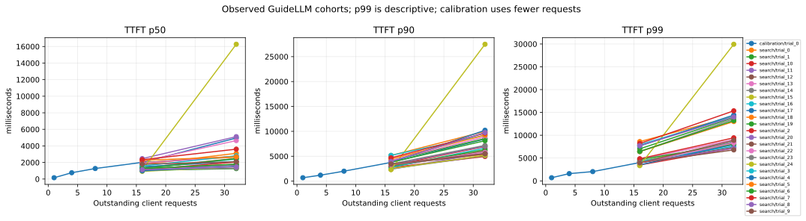
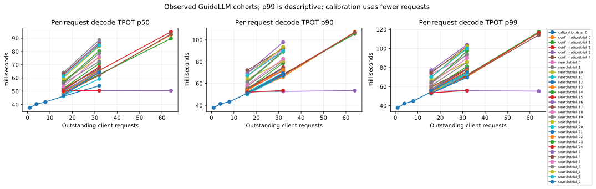
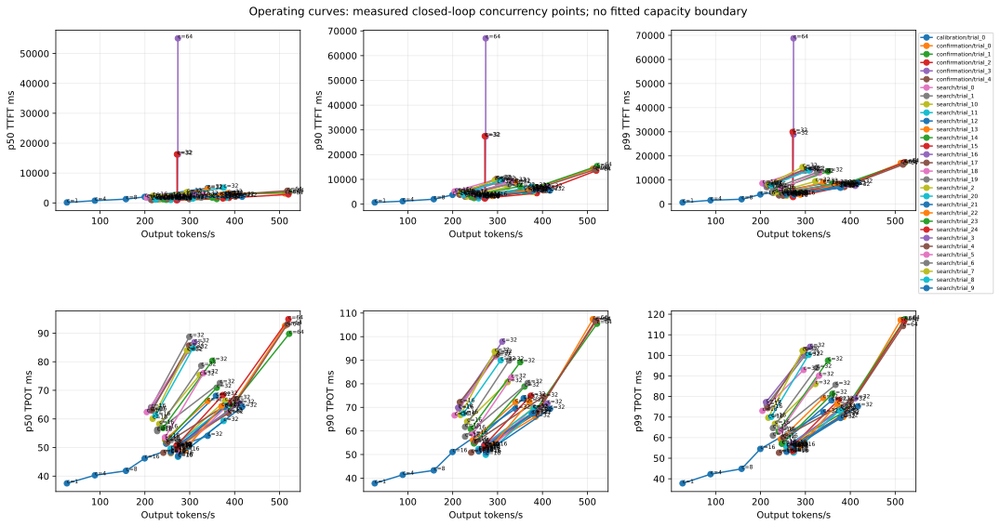
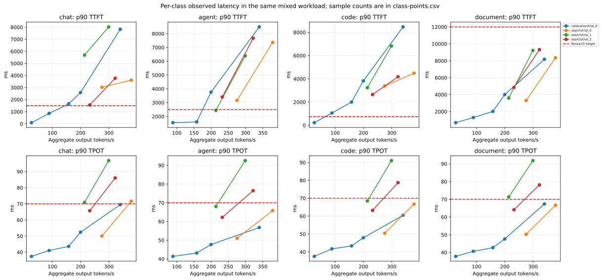
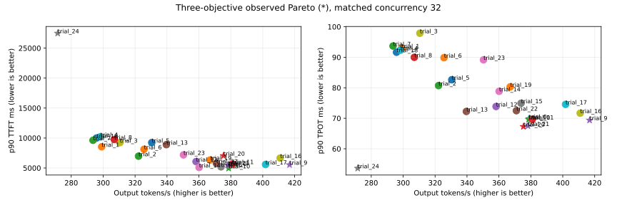

Fresh baseline and same-workload comparisons. Exploratory observed frontier; no confirmed SLA capacity or production-quality claim.
TPOT means (last token − first token)/(output tokens − 1), called inter_token_latency_ms by GuideLLM.





| phase | trial | concurrency | validated | output_tok_s | requests_s | wall_seconds | native | trial_state | source_search_trial | parameters | prefix_queried_tokens | prefix_hit_tokens | prefix_hit_fraction | preemptions | successful | errored | incomplete | ttft_native_p90_ms | ttft_p50_ms | ttft_p90_ms | ttft_p99_ms | tpot_native_p90_ms | tpot_p50_ms | tpot_p90_ms | tpot_p99_ms | all_classes_observed_target_pass | observed_pareto | output_tok_s_change_vs_matched_b0_pct | ttft_p90_ms_change_vs_matched_b0_pct | tpot_p90_ms_change_vs_matched_b0_pct |
|---|---|---|---|---|---|---|---|---|---|---|---|---|---|---|---|---|---|---|---|---|---|---|---|---|---|---|---|---|---|---|
| calibration | trial_0 | 1 | True | 26.315585482083723 | 0.08165905843888596 | 107.99748921394348 | .artifacts/optuna-direct-v1/calibration/trial_0/c1-window0/guidellm.json | COMPLETE | {"async_scheduling": true, "dtype": "bfloat16", "enable_chunked_prefill": true, "enable_prefix_caching": true, "enforce_eager": false, "gpu_memory_utilization": 0.92, "long_prefill_token_threshold": 0, "max_cudagraph_capture_size": 512, "max_model_len": 40960, "max_num_batched_tokens": 8192, "max_num_seqs": 512, "reasoning_parser": "qwen3", "tensor_parallel_size": 1} | 22510.0 | 9408.0 | 0.41794757885384276 | 0.0 | 8 | 0 | 0 | 688.643217086792 | 158.9205265045166 | 687.7673625946045 | 688.5556316375732 | 37.777124666700175 | 37.470496362728824 | 37.77760402829039 | 37.77861068762985 | False | False | 0.0 | 0.0 | 0.0 | |
| calibration | trial_0 | 16 | True | 199.61387068092364 | 0.5520662447798953 | 78.22231364250183 | .artifacts/optuna-direct-v1/calibration/trial_0/c16-window3/guidellm.json | COMPLETE | {"async_scheduling": true, "dtype": "bfloat16", "enable_chunked_prefill": true, "enable_prefix_caching": true, "enforce_eager": false, "gpu_memory_utilization": 0.92, "long_prefill_token_threshold": 0, "max_cudagraph_capture_size": 512, "max_model_len": 40960, "max_num_batched_tokens": 8192, "max_num_seqs": 512, "reasoning_parser": "qwen3", "tensor_parallel_size": 1} | 107428.0 | 42336.0 | 0.39408720259150315 | 0.0 | 40 | 0 | 0 | 3760.5795860290527 | 2015.8652067184448 | 3760.614585876465 | 4012.646551132202 | 51.08004831800274 | 46.208068815929316 | 51.08081088346594 | 54.50462481554817 | False | False | 0.0 | 0.0 | 0.0 | |
| calibration | trial_0 | 32 | True | 339.9441342195821 | 0.9062745978514293 | 49.836334466934204 | .artifacts/optuna-direct-v1/calibration/trial_0/c32-window4/guidellm.json | COMPLETE | {"async_scheduling": true, "dtype": "bfloat16", "enable_chunked_prefill": true, "enable_prefix_caching": true, "enforce_eager": false, "gpu_memory_utilization": 0.92, "long_prefill_token_threshold": 0, "max_cudagraph_capture_size": 512, "max_model_len": 40960, "max_num_batched_tokens": 8192, "max_num_seqs": 512, "reasoning_parser": "qwen3", "tensor_parallel_size": 1} | 107428.0 | 42336.0 | 0.39408720259150315 | 0.0 | 40 | 0 | 0 | 8471.397161483765 | 4951.260924339294 | 8471.40748500824 | 8528.784239292145 | 65.25473220675599 | 54.09592039444867 | 69.48026890848197 | 72.29040857389862 | False | False | 0.0 | 0.0 | 0.0 | |
| calibration | trial_0 | 4 | True | 88.60500584636873 | 0.24596214761800073 | 168.44103837013245 | .artifacts/optuna-direct-v1/calibration/trial_0/c4-window1/guidellm.json | COMPLETE | {"async_scheduling": true, "dtype": "bfloat16", "enable_chunked_prefill": true, "enable_prefix_caching": true, "enforce_eager": false, "gpu_memory_utilization": 0.92, "long_prefill_token_threshold": 0, "max_cudagraph_capture_size": 512, "max_model_len": 40960, "max_num_batched_tokens": 8192, "max_num_seqs": 512, "reasoning_parser": "qwen3", "tensor_parallel_size": 1} | 107428.0 | 42336.0 | 0.39408720259150315 | 0.0 | 40 | 0 | 0 | 1200.1020908355713 | 763.2628679275513 | 1200.1151323318481 | 1587.9169178009033 | 41.44468027002671 | 40.28897799697577 | 41.39170098856402 | 42.22315757186162 | False | False | 0.0 | 0.0 | 0.0 | |
| calibration | trial_0 | 8 | True | 157.8559421692492 | 0.43738780236151026 | 97.19891691207886 | .artifacts/optuna-direct-v1/calibration/trial_0/c8-window2/guidellm.json | COMPLETE | {"async_scheduling": true, "dtype": "bfloat16", "enable_chunked_prefill": true, "enable_prefix_caching": true, "enforce_eager": false, "gpu_memory_utilization": 0.92, "long_prefill_token_threshold": 0, "max_cudagraph_capture_size": 512, "max_model_len": 40960, "max_num_batched_tokens": 8192, "max_num_seqs": 512, "reasoning_parser": "qwen3", "tensor_parallel_size": 1} | 107428.0 | 42336.0 | 0.39408720259150315 | 0.0 | 40 | 0 | 0 | 2004.3511390686035 | 1270.8135843276978 | 2004.3565034866333 | 2029.907054901123 | 43.26152848170928 | 41.84078328749713 | 43.270420887067615 | 44.83882230870864 | False | False | 0.0 | 0.0 | 0.0 | |
| search | trial_0 | 16 | True | 275.15503345016214 | 0.7559585921701439 | 174.6957550048828 | .artifacts/optuna-direct-v1/search/trial_0/c16-window0/guidellm.json | COMPLETE | {"async_scheduling": true, "dtype": "bfloat16", "enable_chunked_prefill": true, "enable_prefix_caching": true, "enforce_eager": false, "gpu_memory_utilization": 0.92, "long_prefill_token_threshold": 0, "max_cudagraph_capture_size": 512, "max_model_len": 40960, "max_num_batched_tokens": 8192, "max_num_seqs": 512, "reasoning_parser": "qwen3", "tensor_parallel_size": 1} | 322284.0 | 123872.0 | 0.3843566543793673 | 0.0 | 120 | 0 | 0 | 3438.71808052063 | 1983.0342531204224 | 3276.1466026306166 | 3939.782829284668 | 50.963868833568 | 47.69207376789907 | 50.79878556765414 | 53.185081463490256 | False | False | 0.0 | 0.0 | 0.0 | |
| search | trial_0 | 32 | True | 378.85641988222966 | 1.0511495052448483 | 120.12705969810486 | .artifacts/optuna-direct-v1/search/trial_0/c32-window1/guidellm.json | COMPLETE | {"async_scheduling": true, "dtype": "bfloat16", "enable_chunked_prefill": true, "enable_prefix_caching": true, "enforce_eager": false, "gpu_memory_utilization": 0.92, "long_prefill_token_threshold": 0, "max_cudagraph_capture_size": 512, "max_model_len": 40960, "max_num_batched_tokens": 8192, "max_num_seqs": 512, "reasoning_parser": "qwen3", "tensor_parallel_size": 1} | 322284.0 | 112112.0 | 0.3478670985838577 | 0.0 | 120 | 0 | 0 | 5388.662099838257 | 2652.305841445923 | 5388.318991661072 | 8430.706651210785 | 69.4361733455284 | 63.92977498982051 | 69.86003857032925 | 74.13045954236797 | False | True | 0.0 | 0.0 | 0.0 | |
| search | trial_1 | 16 | True | 213.78199434385823 | 0.5924893998929756 | 212.44506692886353 | .artifacts/optuna-direct-v1/search/trial_1/c16-window0/guidellm.json | COMPLETE | {"async_scheduling": false, "dtype": "bfloat16", "enable_chunked_prefill": true, "enable_prefix_caching": false, "enforce_eager": true, "gpu_memory_utilization": 0.85, "long_prefill_token_threshold": 2048, "max_model_len": 40960, "max_num_batched_tokens": 2048, "max_num_seqs": 256, "reasoning_parser": "qwen3", "tensor_parallel_size": 1} | 0.0 | 0.0 | None | 0.0 | 120 | 0 | 0 | 4338.047504425049 | 1044.6052551269531 | 4107.169389724733 | 7017.178263664246 | 69.29772320915671 | 64.05637216130695 | 69.42485608151061 | 75.89050606185315 | False | False | -22.30489420336924 | 25.365860808146934 | 36.66636968919297 | |
| search | trial_1 | 32 | True | 299.06732334408485 | 0.833694411019311 | 149.7662477493286 | .artifacts/optuna-direct-v1/search/trial_1/c32-window1/guidellm.json | COMPLETE | {"async_scheduling": false, "dtype": "bfloat16", "enable_chunked_prefill": true, "enable_prefix_caching": false, "enforce_eager": true, "gpu_memory_utilization": 0.85, "long_prefill_token_threshold": 2048, "max_model_len": 40960, "max_num_batched_tokens": 2048, "max_num_seqs": 256, "reasoning_parser": "qwen3", "tensor_parallel_size": 1} | 0.0 | 0.0 | None | 0.0 | 120 | 0 | 0 | 8838.005065917969 | 1258.908748626709 | 8539.424777030948 | 13856.461253166199 | 92.63357957515231 | 88.72972609950047 | 92.98708280128838 | 99.91572234209846 | False | False | -21.060510618494423 | 58.48031251020045 | 33.10482602679463 | |
| search | trial_2 | 16 | True | 232.1695610422055 | 0.6423764584887007 | 199.6258533000946 | .artifacts/optuna-direct-v1/search/trial_2/c16-window0/guidellm.json | COMPLETE | {"async_scheduling": false, "dtype": "bfloat16", "enable_chunked_prefill": true, "enable_prefix_caching": true, "enforce_eager": true, "gpu_memory_utilization": 0.95, "long_prefill_token_threshold": 1024, "max_model_len": 40960, "max_num_batched_tokens": 8192, "max_num_seqs": 256, "reasoning_parser": "qwen3", "tensor_parallel_size": 1} | 322284.0 | 102704.0 | 0.31867545394745006 | 0.0 | 120 | 0 | 0 | 3182.7409267425537 | 1131.259799003601 | 3132.2392225265507 | 4850.471043586731 | 63.562649371577244 | 58.26129866581337 | 63.95119068669338 | 66.7289795034072 | False | False | -15.622273693838295 | -4.392580600285523 | 25.891180216351394 | |
| search | trial_2 | 32 | True | 322.16537390880336 | 0.8980369973311721 | 139.45275020599365 | .artifacts/optuna-direct-v1/search/trial_2/c32-window1/guidellm.json | COMPLETE | {"async_scheduling": false, "dtype": "bfloat16", "enable_chunked_prefill": true, "enable_prefix_caching": true, "enforce_eager": true, "gpu_memory_utilization": 0.95, "long_prefill_token_threshold": 1024, "max_model_len": 40960, "max_num_batched_tokens": 8192, "max_num_seqs": 256, "reasoning_parser": "qwen3", "tensor_parallel_size": 1} | 322284.0 | 95648.0 | 0.29678172047014434 | 0.0 | 120 | 0 | 0 | 6971.418619155884 | 2053.522825241089 | 6970.477914810181 | 9436.735880374908 | 80.55638147193625 | 75.34409878300686 | 80.70985205033247 | 86.06928499072207 | False | False | -14.963728472926274 | 29.36275535278532 | 15.530786558442177 |